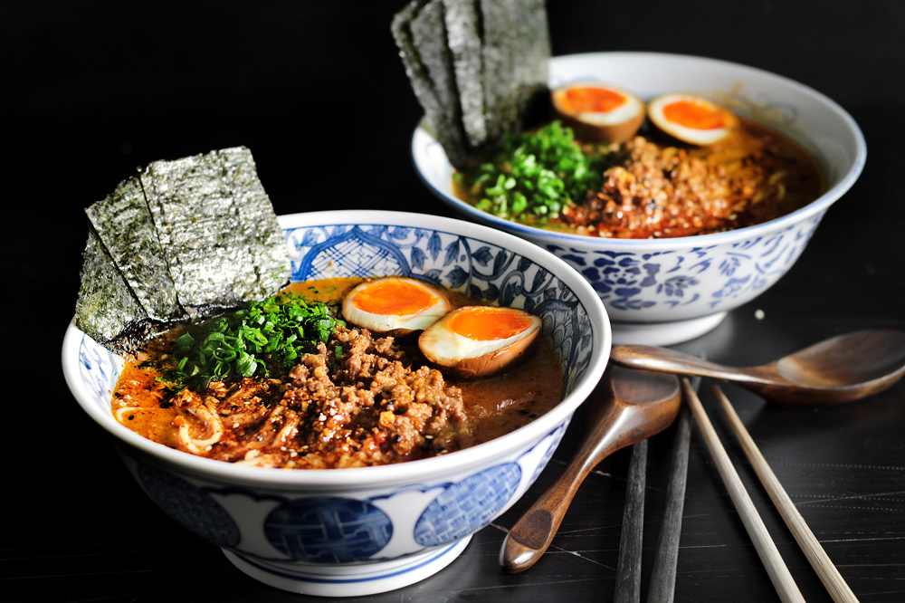

Recipe Page
This is the page you are looking for!
Home Page
Recipe Page
About Page
How to make Spicy Miso Ramen
Ingridents for 2 servings
- 220 grams of fatty ground pork
- 1tbsp of toasted seasme oil
- 1/4tsp of freshly ground black pepper
- 1tbsp of drieed shitake mushrooms
- 2 cups (475 grams) of unsalted chicken or pork stock
- 1 cup (227 grams) of unsweetened, unflavoured soy milk (Asian brands preferred but if unavailable, this will do, too)
- 1/2 cup + 1/4 cup of spicy miso paste
- 2 servings of fresh ramen noodles
- 4tbsp of finely diced scallions
- 1 sheet of nori/Japanese sushi seaweed, cut into rectangular sheets
Directions to MAKE THis WONDERFUL RAMEN
- Rinse the dried shitake mushrooms to get rid of any sand/dirt. Finely chop them and set aside (without soaking)
- In a large soup pot, heat up 1tbsp of toasted sesame oil on high heat and start browning the fatty ground pork with ground black pepper.
- Once the pork has broken up, browned, and released its fat, add 1/4 cup of the spicy miso paste and cook for another min until fragrant.
- Add the chopped shitake, unsalted stock and unsweetened soy milk and bring to a simmer.
- Place 1/2 cup spicy miso paste on top of a VERY FINE sieve.
- Lower the sive half-way into the simmering soup and use a spoon to slowly dissolve the paste into the soup (it may seem very thick and troublesome in the beginning but patient, it'll dissolve eventually).You'd be surprised at how much "solids" within the paste will remain on top of the sieve, which if dumped directly into the soup, will make the soup very thick and "sauce-like".
- Discard the "solids" in the sieve and let the soup simmer for another 5 min. If the soup tastes quite salty at this point, that is correct. It's Japanese RAMEN.....
- Cook the fresh ramen noodles according to package instructions, and drain well.
- Divide the noodles into two large bowl and ladle the soup on top (you may have a bit more than needed).
- For each serving, place 1 shoyu egg (cut into half), 2 tbsp of finely diced scallions, 3 rectangular nori sheets, and 2 tsp of garlic and togarashi oil.
ENJOY THIS AMAZING SPICY MISO RAMEN!

I got this recipe and image from Lady and Pups